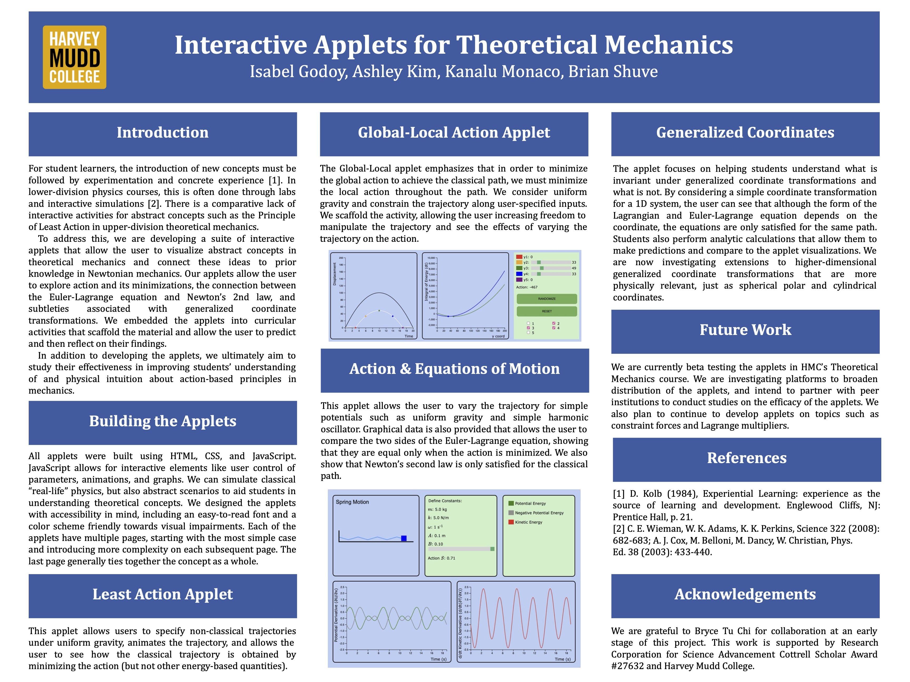

Theoretical Mechanics Interactive Applets

During the summer of 2023, I collaborated with a partner to develop interactive applets designed to help students grasp abstract theoretical mechanics concepts. These applets aimed to bridge the gap between Newtonian and theoretical mechanics by providing intuitive visualizations.
To enhance user engagement, the applets incorporated interactive elements such as sliders, buttons, and dynamically updating graphs, allowing users to manipulate variables, explore different scenarios, and see the immediate effects of their changes. They also featured guiding questions with answers to provide a structured learning experience, ensuring users had the necessary background knowledge to engage meaningfully with the material.
Our primary focus was on refining and expanding a foundational applet, while also improving the GUI and overall user experience. Additionally, we worked on structuring the applets for broader accessibility beyond Harvey Mudd College (HMC) and optimizing the codebase by consolidating files and refining the interface. Our contributions helped create engaging, interactive tools that enhance students' intuition for theoretical mechanics.
Some key contributions from the summer include:
-
Trajectory Applet (4 pages): This applet visualizes how an object follows a classical trajectory and an alternate trajectory, which is defined by a mathematical parameterization. I implemented sliders for parameter variations and checkboxes to display chosen energy plots on a graph that allow users to compare these paths and see how minimizing a specific quantity (the action) results in the classical trajectory.
-
Global-Local Action Applet (4 pages): This applet demonstrates how optimizing a trajectory at a local level leads to the optimal global path. I developed user-controlled inputs that let users adjust trajectory constraints in real time, affecting the visualized outcome. I implemented sliders to allow users to move points within a graph to see how this varies parameterized curves, as well as buttons that would randomize these points or put them on the path of classical trajectory. The applet dynamically updates animations and data visualizations based on user input.
-
Equations of Motion & Action Applet (5 pages): This applet enables users to explore how different forces affect motion. I built interactive graphs that allow users to modify trajectory parameters, helping them understand the mathematical conditions required for an optimized path. The applet supports various physics scenarios, including projectile motion and harmonic oscillators.
-
Generalized Coordinates Applet (5 pages): This tool helps users understand what invariants exist under generalized coordinate transformations. I implemented slider features that allow users to vary defined constants and compare visualized results, ensuring consistency across different coordinate choices.
-
Right-Hand Rule Applet (5 pages): This applet is a separate application from the prior suite of theoretical mechanics applets. It provides an interactive way for users to practice vector direction concepts, such as angular momentum and torque. I implemented a randomized vector generator that presents different force scenarios in 3D space and a multiple-choice interface where users receive immediate feedback on their answers.
These applets were integrated into HMC's Theoretical Mechanics course for Fall 2023/2024. I continued working on them in Fall 2023, developing a separate Hamiltonian equation applet and refining existing ones based on student feedback.
I presented this work at the APS Far West Conference and Harvey Mudd's summer research poster session.